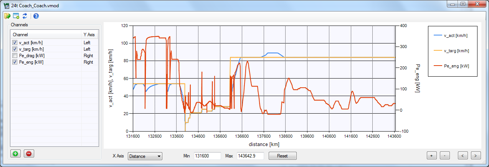

Description
The Graph Window allows to visualise modal results files (.vmod). Multiple windows can be open at the same time to display different files.
Note that the graph does not update automatically if the results file has changed.
Channels
Use the and
and  buttons to add or
remove channels. Doubleclick entries to edit existing channels.
buttons to add or
remove channels. Doubleclick entries to edit existing channels.
Each channel can be plotted either on the left or on the right Y Axis. Use the checkbox to disable channels in the graph.
X Axis Controls
The X Axis can either show distance or time.
Min, Max
Reset button
+, - buttons
<, > buttons
Controls
 Open a .vmod file
Open a .vmod file
Open a new Graph Window
Reload the currently open file
The Graph Window allows to visualise modal results files (.vmod). Multiple windows can be open at the same time to display different files.
Note that the graph does not update automatically if the results file has changed.
Channels
Use the
Each channel can be plotted either on the left or on the right Y Axis. Use the checkbox to disable channels in the graph.
X Axis Controls
The X Axis can either show distance or time.
Min, Max
Sets the range for the x axis.
Reset button
Reset the x axis range to display the complete cycle.
+, - buttons
Zoom in/out on the x axis.
<, > buttons
Move the x axis range left/right.
Controls
Open a new Graph Window
Reload the currently open file